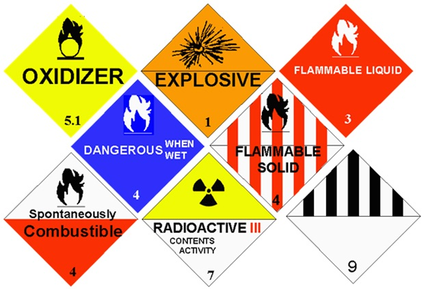
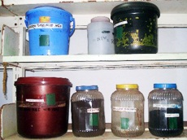
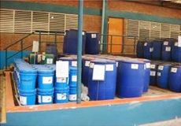
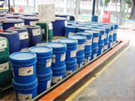
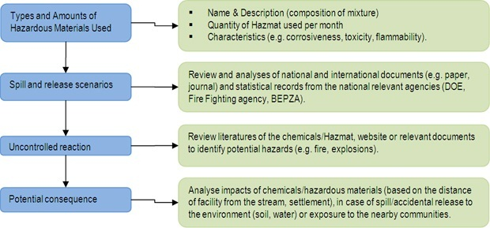
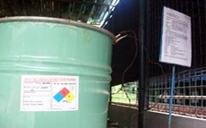

Chemicals/Hazardous Materials Management
Issue Overview
Chemicals and hazardous materials are materials that are transported to, stored, and then managed and utilized in the production process, including paints, solvents, dyes, cleaners, varnishes, oils, and raw materials for an industrial process. If not properly stored, managed and utilized, chemicals and hazardous materials may release into the environment causing degradation of land, air and water, explosions, and danger to employees who improperly handle or come into contact with these materials. The objective of chemical and hazardous material management is to transport, store, and manage these materials by safeguarding the personal safety of the employees who use them, and to store them in safe areas that will prevent their release to the environment, and reduce or eliminate any potential for explosion and fire.
Best Practice
Considering the cleaner production perspectives of industrial operations, it is recommended to avoid or, where avoidance is not possible, to minimize the use of hazardous materials.
Priority should be given to eliminate Chemicals/Hazardous Materials wherever possible. For example:
Priority should be given to eliminate Chemicals/Hazardous Materials wherever possible. For example:

Replace potentially hazardous thinners with biodegradable compounds that do not generate potentially toxic metabolites;
Avoid use of non-biodegradable complexing agents in pre-treatment and dyeing processes through selection of less hazardous compounds or process modifications that allow removal of iron and alkaline cations;
Replace toxic and persistent organic and inorganic textile preservation chemicals, e.g. brominated and chlorinated compounds, dieldrin, arsenic, and mercury) with bio-degradable agents;

Photo1: Containers with hazardous materials kept in shelf with labels
Dyeing and textile manufacturing operations in Bangladesh, in general, include the use of hazardous chemicals in pretreatment, dyeing, and other processes to provide the final product with desired visual and functional properties. Being potentially harmful to the health and environment, these operations should include a detailed plan on how chemicals/hazardous materials are managed in the process including handling, storage, use and ultimate disposal of the wastes, so as to prevent environmental damage.
Avoid or minimize the use of potentially impacting antifoaming agents, solvents, cleaners, sprays and refrigerants, and paints through recycling, preventing fabric rotation, or selecting biodegradable agents.
Facility utilizing chemicals or hazardous materials in its process needs to take following measures to prevent spills, leaks and any other releases due to misuse, mishandling or poor storage procedures:
Containers and Secondary Containment
Use containers that are corrosion resistant or select them considering the physical and chemical characteristics of each chemical or hazardous materials;
Consider similar precautionary principle considered for piping, pumping or metering chemicals or hazardous materials;
Enclose chemicals/hazardous material storage areas in dykes or curbs which will contain the stored volume until it can safely transferred to alternate storage or released to the wastewater at control rates which will not damage facility, inhibit the treatment process, or contribute to stream pollution;
Use engineering controls (containment, automatic alarms, and shut-off systems) commensurate with the nature of hazard;
Avoid placing chemicals/ hazardous storage area near to drains or any place where spills can be released into to the environment;
Always label any chemicals/hazardous materials containers properly;
Staff without proper prior training should not handle or use any hazardous materials/chemicals;
Do not leave any spills or leaks unattended or without cleaning up the spill or leak immediately.
Store smaller storage units (e.g. cans, sprays) containing paints, solvents, sprays in a cabinet or shelf area, but ensure care that non-compatible elements are not mixed.
Labelling and Instructions
Label and mark all chemical and hazardous materials storage areas and containers according to national and internationally recognized requirements and standards, including the International Chemical safety Cards (ICSC), Materials Safety Data Sheets (MSDS) or equivalent;
Use color code for containers/pipes containing or transporting hazardous materials/chemicals. For example – paint container or pipe RED if it contains/transports hazardous materials;
Label handling instructions clearly on the containers in both local and English languages.
Safe Storage of Liquefied Gas
Store liquefied gas chemicals such as chlorine and sulphur dioxide in isolated areas and ensure gas detection kits, alarms, controls, safety devices and emergency repair kits in the facility.
Training and Skill Development
Train staff/persons responsible for storing, handling or using chemicals/hazardous materials in the use, handling, management, and safety precautions for each of the chemicals.


Photo: Large secondary containments in Youngone facility at the DEPZ
Emergency Response Plan – Spill Prevention and Clean-up
Develop an Emergency Response Plan for the facility with necessary equipment for cleaning up dangerous spills to protect facility personnel from the exposure of hazardous materials, and to evacuate personnel in case of an emergency (e.g. fire, explosion, dangerous chemical release);
Ensure easy access to first aid measures/medications at the facility to provide primary treatment to personnel exposed to accidents.
Monitoring and Inspection
Ensure implementation of management controls (procedures, inspections, communications, training, and drills) to address residual risks that have not been prevented or controlled through engineering measures.
Chemicals/Hazardous Materials Assessment
Facilities that employ chemicals or hazardous materials need to assess the potential hazardous characteristics of these materials and their proper management to reduce the risk these materials pose. Assessment of chemicals/hazardous materials includes:
This assessment should be conducted by a specified professional using internationally accepted methodologies (e.g. HAZOP , FMEA , HAZID ).

Source: Adopted and modified from the IFC General Environmental, Health, and Safety Guidelines.
HAZOP (Hazard and operability) is a method for identifying and dealing with potential problems in industrial processes, particularly those which would create a hazardous situation or a severe impairment of the process. For more information, please visit http://hazop.com.
FMEA (Failure Modes and Effects Analysis) is a procedure for analyzing potential reliability problems early in the development cycle as well as is used to identify potential failure modes, determine their effect on the operation of the product, and identify actions to mitigate the failures. For more information, please visit http://www.npd-solutions.com/fmea.html.
HAZID (Hazard Identification) is a study tool for hazard analysis, used early in a project as soon as process flow diagrams, draft heat and mass balances, and plot layouts are available. For more information, please visit http://www.hazid.com.
Recordkeeping
Labelling of drums, containers and other storage units

Clearly denoted on drum or container with specific hazardous classification;
Listing of all chemicals and hazardous materials used at the facility (estimated volume and their potential hazards);
Location of storage areas (can be shown on Emergency Response Plan);
Written Standard Operations Procedures (SOPs) for the management and use of chemicals/hazardous materials;
The management of secondary containment structures and storage units
Emergency and Spill Response Procedures for accidental releases of the materials into the environment or in contact with an employee;
List of Personal Protection Equipment (PPE) and spill response equipment;
Spill response measures and clean-up procedures.
Case Study: Chemicals and Hazardous Materials Management in Savar Dyeing & Finishing Industry at the DEPZ
Savar Dyeing and Finishing Industries Ltd operate at the Dhaka EPZ. This operation employs about 280 staff of which a significant number come in close contact with chemicals and hazardous materials. This facility has adopted NIKE's environmental and safety protocols for proper use, storage and handling of chemicals/hazardous materials. Savar Dyeing and Finishing Industry manage its chemicals and hazardous materials in protected and adequately sized secondary containment area. Savar Dyeing also monitors all storage areas and containers regularly and ensures whether all the chemical or hazardous material containers are properly labelled with handling and use instructions.

Photo: Labelling on drum in Youngone facility at the DEPZ
Water fountains are placed in the workplaces so as to ensure water availability in case of an accident or emergency. More importantly, all management activities relating to the use, storage and handling of chemicals and hazardous materials are performed by personnel properly trained at the facility.